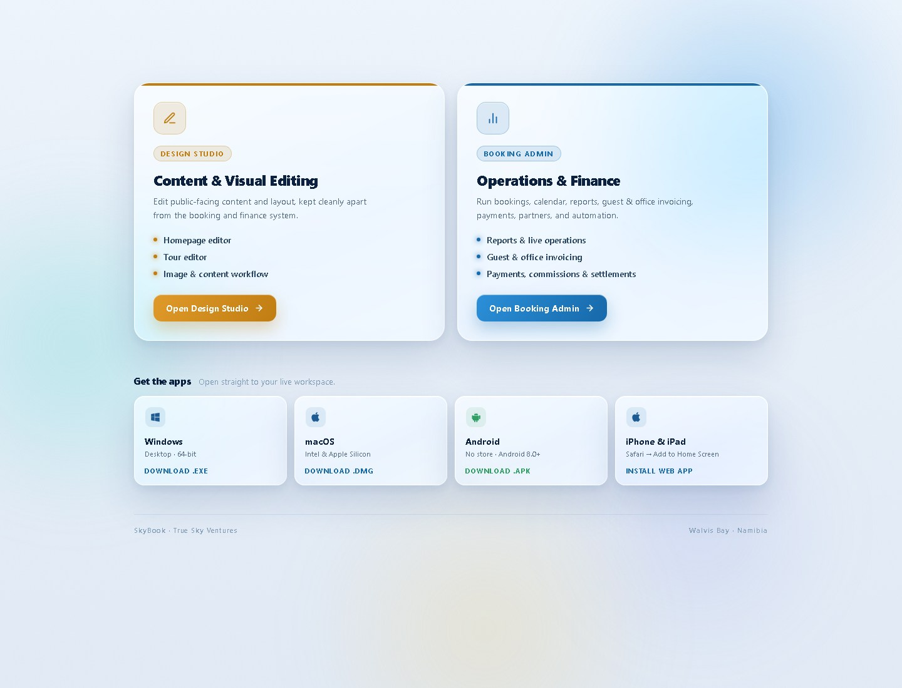

Stage 01 · Booking
Travel operations software
The whole day,
in motion.
Sky Book connects the work behind every departure — bookings, availability, manifests, customers, resources and money — in one operating view.
- 01 Website booking
- 02 Live operations
- 03 Finance state
01New
Website booking
Coastal Explorer
3 guestsTue · 08:30
02Held
Availability
3 seats connected
03Ready
Resource
Vehicle 02 · Guide N.
Capacity 8Assigned
04Synced
Manifest
Pickup · 08:15
3 guestsRoute added
05Updated
Payment & finance
Deposit recorded
Balance trackedInvoice linked
06Live view
Command
The day reflects the change
CalendarTue · 08:30
CustomerProfile connected
ReservationsOperationsFinanceOne connected day
Real product evidence · 01
Two workspaces.
One operation.
Public-facing content stays separate from the operational core. Teams enter through a real Sky Book gateway, then move into Design Studio or Booking Admin according to the work at hand.
Authentic local Sky Book capture. No fabricated dashboard UI.

Content stays separate Operations + finance01Purpose-built entry Clear separation between site content and daily operations.
02Operational scope Bookings, calendar, reports, invoicing, payments and partners.
03Workspace access Browser and installable application pathways are represented in the existing product.
The operating day · 07:10 → 18:40
See the day change
as the work moves.
Scroll the live sequence, choose a stage, or swipe the cockpit on mobile. The visual below is an illustrative operating model based on verified modules.
Stage 02 · Availability
Capacity becomes an operational decision.
The availability engine, schedules and blackout rules help the team understand whether the service can run.Stage 03 · Resources
People and equipment meet the departure.
Vehicles, vessels, guides and operating partners can be connected with capacity and assignment context.Stage 04 · Manifest
The departure becomes a plan the team can run.
Calendar, guest counts, pickups, operator and status information resolve into the day's manifest.Stage 05 · Customers
Guest service keeps the history in view.
Customer profiles, booking history, portal actions and support context stay connected to the booking.Stage 06 · Payments
Operational change reaches the money layer.
Payment status, balances, refunds, reconciliation and invoice records can be followed from the same system.Stage 07 · Reporting
Management sees what the day became.
Sales, payment process, agent, invoice, guide and duty reporting turn completed activity into a clearer handover.One record · many viewpoints
Turn the booking.
Change the lens.
The same operational record means something different to every team. Choose a viewpoint to see how Sky Book keeps the hand-off connected.
Interactive conceptual model — not a product screenshot.
Lens 01 · Operations
Can the departure run?
Service, calendar, manifest, operator and resource context sit together so the team can prepare the actual departure.
- Manifest and pickup context
- Guide, vehicle or vessel assignment
- Departure status and capacity
Select a viewpoint
The platform beneath the day
Not another booking form.
An operating system for the work behind it.
Sky Book is arranged around the responsibilities a tour operation actually carries. Open a layer to see the verified modules inside.
01CommandSee what needs attention now.+
Bring the day into one view through the Command Center, Notifications, Today's Manifest and Calendar.
- Command Center
- Notifications
- Today's Manifest
- Calendar
02ReservationsTurn demand into workable records.+
Review website reservations and manage bookings alongside customers, services and tour content.
- Reservation review
- Bookings
- Customers & CRM
- Services & Tours
03InventoryConnect capacity to the promise.+
Coordinate schedule rules, availability, capacity and the real resources needed to operate a departure.
- Availability Engine
- Resources & Capacity
- Rates & Promotions
- Blackout rules
04RevenueFollow money through the operation.+
Work with payment states and downstream financial records without losing the booking that created them.
- Payments & refunds
- Reconciliation
- Invoices / debtors & creditors
- Partners & reporting
05AutomationKeep communication and controls visible.+
Configure operational templates and reminders, then observe system health and the trail of change.
- Templates & reminders
- System health
- Audit trail
- Notifications
06AdministrationControl access across the workspace.+
Manage settings, users and roles while coordinating shared services across True Travel and Iventure brand operations.
- Settings
- Users & roles
- True Travel
- Iventure
Deployment note. Payment, email and other provider integrations are configured and verified per deployment. Availability depends on the selected providers, production credentials, domain setup and launch checks.
Multi-brand operation
Two travel brands.
One operational spine.
Sky Book can keep the True Travel and Iventure service catalog aligned while preserving brand-aware booking and operational context.
TT
Brand 01True Travel
IV
Brand 02Iventure
Operational coreSky BookShared services · brand-aware records
CommandManifestFinanceReporting
Real product evidence · capture plan
The next three screens
belong here.
No authenticated operational screenshots were available to use safely. These production-ready slots state exactly what must be captured, sanitized and supplied — without substituting invented UI.
Capture required · authenticated product
Command Center
- Desktop, minimum 1440 × 900
- Show one believable operating day with seeded data
- Remove guest names, email, phone, IDs and credentials
- Keep alerts, status and daily workload visible
Capture required · authenticated product
Calendar + Manifest
- Desktop, minimum 1440 × 900
- Show a populated day and its manifest context
- Anonymize guests, pickups and staff names
- Include service, status and resource assignment
Capture required · authenticated product
Finance + Reconciliation
- Desktop, minimum 1440 × 900
- Show payments, refunds, invoice or reconciliation state
- Remove provider tokens, account data and personal IDs
- Use sanitized, coherent transaction examples
Already have access? Enter the existing workspace gateway.
Open workspaceBuilt by Aero Digital Solutions
Put tomorrow's operation
on one screen.
See how Sky Book can be configured around your tours, team, brands and operating workflows.
Book a Sky Book demo info@aerodigital.space